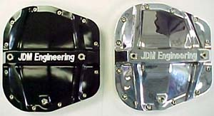
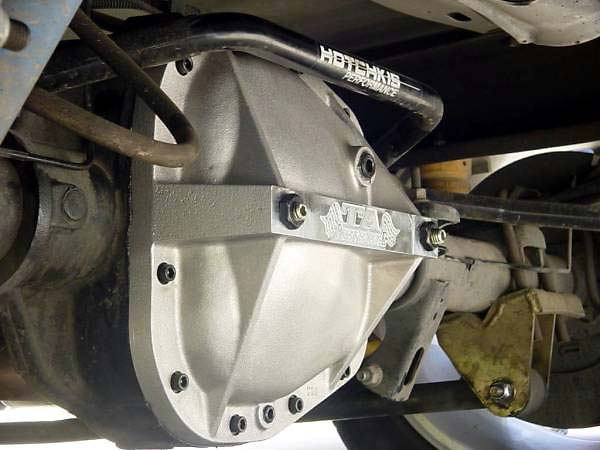
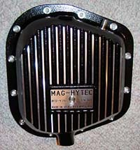
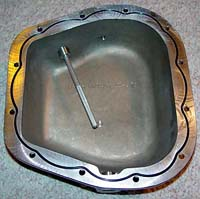
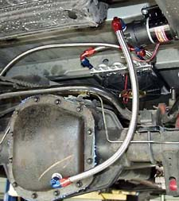
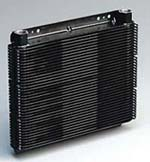

|
Differential Improvements |
|
It was difficult to decide whether
improvement to the differential are a performance upgrade or a
reliability upgrade. They are a little of both. A poorly
functioning diff will compromise the ability to lay down traction both
off of the line and coming out of a turn.
Despite the beefy 9.75 rear end, the stock limited slip diff is fragile. So cooling the fluid may help. But the ultimate solution is a gear-type limited slip. |
| Aftermarket differential covers provide for greater fluid capacities, and, depending on the model, may actually provide additional support and rigidity for the differential and gears. While there are any number of differential girdles/rear end bearing supports for an 8.8" rear, JDM (left) and TA (below) are the only vendors that make a girdle for the 9.75" rear in the Lightning. |
|
 Some have questioned whether the 9.75 really needs any additional support, as rear gear failures are all but unheard of. The JDM piece is billet aluminum and costs $350. The TA girdle is pressure case and costs $180-200. Both take the liberty of defacing an otherwise beautiful cover with unpaid-for advertising. |
|
Mag-Hytec makes a trick diff cover ($225) which holds twice the fluid (5 qts. vs. 2.6), has a magnetic drain plug, magnetic dipstick for easy fluid level checks, and a hole for a 1/8" temperature sender (AutoMeter senders fit perfectly). Plus, both the increased surface area and the thickness of the cast cover itself may help wick heat away from the fluid.
|
| The Mag-Hytec comes complete with easy-to-follow instructions and stainless steel hardware. The cover is beautifully finished in thick black powder coat, with the fin faces machined off and clear-coated. The fit and finish are spectacular. |
| There are, however, some fitment issues when installing a Mag-Hytec on a Lightning, especially when using a panhard or when the rear is lowered more than a couple of inches. Installation photos and tips can be found here. |
|
Some Lightning racers have reported heat-related differential clutch pack failure. The trick setup to the right, from the One Lap of America truck, is probably excessive for even hard street use, but may help slow down wear on the differential clutches. The Tilton pump pictured (part # 17-522) is standard issue for race cars and should be able to handle any abuse dealt to it. Note that some recommend that the cooler be installed ahead of the pump to cool the fluid before it reaches the pump. While normally it is better to pump against pressure, rather than trying to draw fluid against pressure, the Tilton pump pictured should easily be able to handle the task either way. The B&M SuperCooler (part # 70266) looks like a solid choice --compact, durable, effective, and low flow restriction. The 70266 comes bare. I am using a Derale fan-cooled transmission cooler with -8AN lines. Details here. |